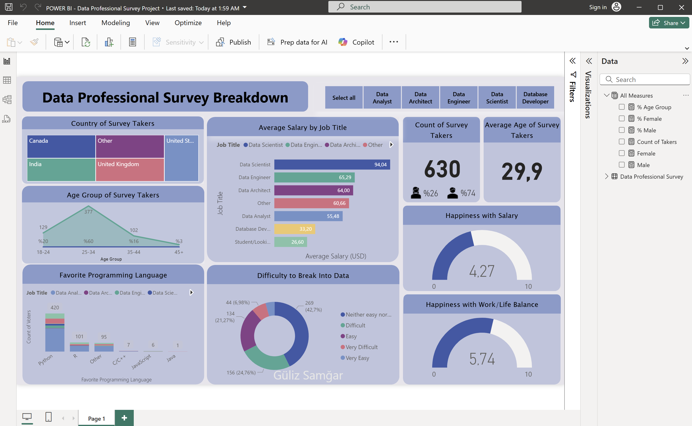

Proje Detayları
Hedef
Veri Uzmanları Anketi projesinin amacı, dünya çapında veri profesyonelleri hakkında toplanan anket verilerini analiz ederek önemli içgörüler elde etmektir. Çalışanların kariyer değişiklikleri, maaş aralıkları, sektör tercihleri, iş memnuniyeti ve teknik becerileri gibi faktörler analiz edilerek, veri dünyasındaki trendler ve fırsatlar incelenmektedir. Elde edilecek bilgiler, kurumların veri odaklı stratejik karar süreçlerine katkı sağlayarak genel performansı iyileştirmesine yardımcı olacaktır.
GitHub'dan indirin!Arka Plan Bilgisi
Veri seti, dünya genelinden 630 veri uzmanının cevaplarından oluşan bir anket verisini içerir. Kayıtlarda katılımcının yaşı, cinsiyeti, ülkesi, eğitim durumu, iş unvanı, yıllık maaş aralığı, tercih ettiği programlama dilleri, iş tatmin derecesi ve iş-yaşam dengesi memnuniyeti gibi çeşitli bilgiler bulunur. Bu özellikler, veri uzmanlarının demografik profillerini ve mesleki eğilimlerini ayrıntılı olarak analiz etmemize imkân tanır. Veriler, analiz öncesinde Power BI üzerinde işlenmek üzere bir Excel dosyası (.xlsx) formatında temin edilmiştir. Bu sayede veri uzmanlarının demografik ve mesleki eğilimleri kapsamlı biçimde incelenebilmiştir.
GitHub'dan veri setini indirin!Kurulum
Projeye başlamadan önce Power BI içindeki Power Query aracı kullanılarak kapsamlı bir veri temizleme ve hazırlık süreci gerçekleştirildi. Analiz için gerekli olmayan sütunlar (örneğin tarih, tarayıcı, işletim sistemi bilgileri) veri setinden kaldırıldı. Eksik veriler kontrol edildi ve veri tiplerinin uygunluğu sağlandı.
Verilerin daha anlamlı ve görselleştirilebilir hale gelmesi amacıyla şu düzenlemeler yapıldı:
- Yaş Verileri: Yaş bilgileri gruplanarak kategorilere ayrıldı (örneğin 18–24, 25–34, 35–44, 45+.)
- İş Unvanı Segmentasyonu: Katılımcıların iş unvanları farklı şekilde yazılmış olsa da (örneğin "Analyst", "Fianance Analyst", "Business Analyst" vb.), analiz kolaylığı sağlamak amacıyla benzer roller gruplandırıldı. "Other" seçeneği üzerinden girilen tüm farklı unvanlar da tek bir “Other” grubu altında birleştirildi.
- Favori Program Dilleri: Katılımcıların en çok sevdikleri programlama dili veya araçları belirtmeleri için açık uçlu "Other" seçeneği mevcuttu. Ancak veri çeşitliliği yüksek olduğundan, bu girişler de tek bir "Other" grubu altında birleştirildi.
- Maaş Aralıkları: Metinsel olarak belirtilen maaş aralıkları, ortalama sayısal değerlere dönüştürüldü.
- Ülke Dağılımı: Katılımcılar, mevcut listede olmayan ülkeleri de "Other" seçeneğiyle manuel olarak girdi. Bu farklı ülke isimleri analiz açısından gruplanarak yine "Other" grubu altında birleştirildi.
Resim 1. Temizlenmiş, dönüştürülmüş veri setinin görünümü
Bu adımlar, verinin analiz için uygun formatta olmasını sağlayarak elde edilen sonuçların güvenilirliğini artırmıştır.
Analiz
Veri temizlendikten sonra, keşifsel veri analizleri gerçekleştirmek ve iç görüler elde etmek amacıyla aşağıdaki iş sorularına odaklanılmıştır:
İş Soruları (Business Questions):
- Veri uzmanlarının cinsiyete göre ortalama maaşları arasında fark var mı?
- Katılımcılar hangi ülkelerden gelmektedir ve ülke bazında ortalama maaşlar nelerdir?
- En popüler programlama dilleri hangileridir?
- Yaş, eğitim düzeyi ve iş unvanına göre demografik dağılımlar nasıldır?
- İş tatmini ile ücret memnuniyeti arasında nasıl bir ilişki vardır?
Veri Keşfi (Data Exploration)
Keşifsel veri analizi aşamasında, verinin temel özelliklerini anlamak için çeşitli görselleştirmeler oluşturuldu. Yaş ve cinsiyet bilgisini gösteren görsellerle katılımcı profili analiz edildi. Ülkeler bazında katılımcı sayısı ve ortalama maaş karşılaştırmaları yapıldı. Tercih edilen programlama dilleri ve iş/yaşam dengesi gibi memnuniyet seviyeleri incelenerek örüntüler ortaya çıkarıldı. Ayrıca tercih edilen iş unvanları ve kariyer geçiş eğilimleri de bu aşamada incelendi.
Bu analiz sürecinde daha güçlü içgörüler üretebilmek için Power BI üzerinde özel ölçümler (measures) oluşturuldu:
Count of Takers: Anketi yanıtlayan toplam katılımcı sayısını ölçmek için kullanıldı.% Age Group: Yaş gruplarının toplam içindeki yüzdesini göstermek için kullanıldı.Female,Male: Cinsiyetlere göre katılımcı sayısını ayıran temel ölçüler olarak tanımlandı.% Female,% Male: Cinsiyet dağılımını oransal olarak göstermek için hesaplandı.
Bu ölçümler sayesinde, dinamik görselleştirmelerle hem genel eğilimler hem de daha ince segmentlerdeki detaylar etkili şekilde analiz edilebildi. Elde edilen bu içgörüler, sonrasında pano (dashboard) tasarımında hangi metriklerin öne çıkarılması gerektiğine dair yol gösterici olmuştur.
Dasboard Tasarımı
İşlenen veriler kullanılarak Power BI ortamında etkileşimli bir dashboard hazırlandı. Bu dashboard, veri uzmanlarının profiline dair önemli göstergeleri içerir. Kullanılan görselleştirmeler arasında; katılımcı sayısını/yaşını vurgulayan kartlar, katılımcıların ülkelerini görselleştiren treemap, yaş gruplarının katılımcı sayısındaki dağılımını ve yüzdesini gösteren alan grafik (area chart), programlama dillerinin dağılımını gösteren kümeli sütun grafikler (Clustred columnn chart) ve iş/yaşam ile maaş memnuniyetini ölçen göstergeler (gauge) bulunmaktadır. Ayrıca kullanıcıların iş ünvanına göre filtreleme yapmalarını sağlayan dilimleyiciler (slicer) eklenmiştir. Dashboard'da belirli ana göstergeleri vurgulamak için kartlar ve önemli alanlara dikkat çekmek amacıyla şekiller kullanılmıştır. Bu sayede kullanıcılar, ihtiyaç duydukları verilere kolayca odaklanabilir.
Resim 2. Veri Uzmanları Anketi dashboard'una ait bir görünüm.
Temel Bulgular (Key Findings)
Dashboard yardımıyla aşağıdaki önemli içgörülere ulaşılmıştır:
- Veri uzmanlarının ortalama yaşı yaklaşık 29'dur (en genç 18, en yaşlı 92 yaşındadır).
- Katılımcıların büyük çoğunluğu erkektir.
- Veri uzmanlarının çoğu ABD'de bulunmaktadır; ABD, en yüksek katılımcı sayısına sahiptir.
- Veri bilimciler, diğer meslek gruplarına göre en yüksek ortalama maaşa sahiptir.
- Python, veri profesyonelleri arasında en sık tercih edilen programlama dilidir.
- 1-10 ölçeğinde, ortalama maaş memnuniyeti nispeten düşüktür.
- İş/yaşam dengesi memnuniyeti ise ortalama seviyenin biraz üzerindedir.
Öneriler
Bu bulgular ışığında kurumlara aşağıdaki stratejiler önerilmektedir:
- Veri bilimcilerin sektörde yüksek talep gördüğü ve yüksek maaş aldığı göz önünde bulundurularak, bu alanda uzman yetiştirmek için eğitim ve kariyer geliştirme programları düzenlenebilir.
- Ortalama maaş memnuniyetinin düşük olması nedeniyle, rekabetçi maaş ve yan hak politikaları gözden geçirilebilir.
- Python gibi popüler programlama dillerinde eğitim ve kurs imkânları sağlanarak çalışanların yetkinliği artırılabilir.
- Hibrit veya esnek çalışma modelleriyle çalışanların iş/yaşam dengesi desteği sürdürülebilir.
- Kapsayıcı işe alım stratejileri ile özellikle kadın veri uzmanlarının oranı ve motivasyonu desteklenebilir.
Sonuç
Veri profesyonellerinin profillerini, beklentilerini ve sektörle ilgili deneyimlerini anlamak; hem işverenler hem de sektöre yeni adım atmak isteyenler için büyük önem taşımaktadır. Bu proje kapsamında yürütülen analizler sayesinde, katılımcıların demografik özelliklerinden maaş memnuniyetine, teknik becerilerinden kariyer değişim motivasyonlarına kadar birçok kritik bilgi elde edilmiştir. Power BI kullanılarak geliştirilen interaktif pano, kullanıcıların veriyle etkileşim kurarak derinlemesine analiz yapmalarını sağlamaktadır. Bu proje, veri analizi ve görselleştirme konusundaki yetkinliklerimi ortaya koymaktadır. Elde ettiğim bu deneyimler, çeşitli sektörlerdeki organizasyonların veriye dayalı karar almasına ve hedeflerine ulaşmasına katkı sağlayacak becerileri kapsamaktadır.